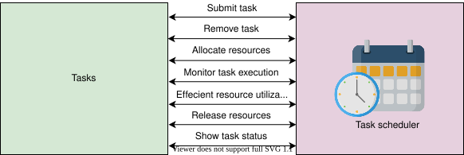
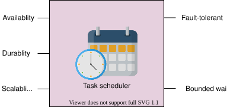
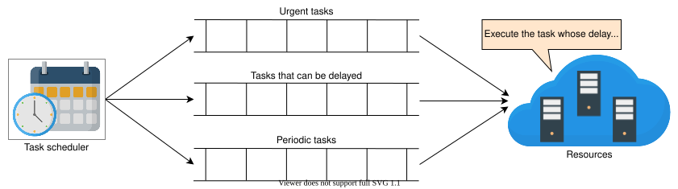
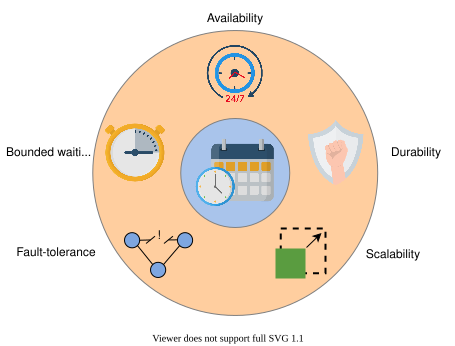

23. Distributed Task Scheduler
System Design: The Distributed Task Scheduler
System Design: The Distributed Task Scheduler
Learn about the basics of designing a distributed task scheduler.
What is a task scheduler?#
A task is a piece of computational work that requires resources (CPU time, memory, storage, network bandwidth, and so on) for some specified time. For example, uploading a photo or a video on Facebook or Instagram consists of the following background tasks:
- Encode the photo or video in multiple resolutions.
- Validate the photo or video to check for content monetization copyrights, and many more.
The successful execution of all the above tasks makes the photo or video visible. However, a photo and video uploader does not need to stop the above tasks to complete.
Another example is when we post a comment on Facebook. We don’t hold the comment poster until that comment is delivered to all the followers. That delivery is delegated to an asynchronous task scheduler to do offline.
In a system, many tasks contend for limited computational resources. A system that mediates between tasks and resources by intelligently allocating resources to tasks so that task-level and system-level goals are met is called a task scheduler.
When to use a task schedular#
A task scheduler is a critical component of a system for getting work done efficiently. It allows us to complete a large number of tasks using limited resources. It also aids in fully utilizing the system’s resources, provides users with an uninterrupted execution experience, and so on. The following are some of the use cases of task scheduling:
-
Single-OS-based node: It has many processes or tasks that contend for the node’s limited computational resources. So, we could use a local OS task scheduler that efficiently allocates resources to the tasks. It uses multi-feedback queues to pick some tasks and runs them on some processor.
-
Cloud computing services: Where there are many distributed resources and various tasks from multiple tenants, there is a strong need for a task scheduler to utilize cloud computing resources efficiently and meet tenants’ demands. A local OS task scheduler isn’t sufficient for this purpose because the tasks are in the billions, the source of the tasks is not single, and the resources to manage are not in a single machine. We have to go for a distributed solution.
-
Large distributed systems: In this system, many tasks run in the background against a single request by a user. Consider that there are millions to billions of users of a popular system like Facebook, WhatsApp, or Instagram. These systems require a task scheduler to handle billions of tasks. Facebook schedules its tasks against billions of parallel asynchronous requests by its users using Async.
Note: Async is Facebook’s own distributed task scheduler that schedules all its tasks. Some tasks are more time-sensitive, like the tasks that should run to notify the users that the livestream of an event has started. It would be pointless if the users received a notification about the livestream after it had finished. Some tasks can be delayed, like tasks that make friend suggestions to users. Async schedules tasks based on appropriate priorities.
Distributed task scheduling#
The process of deciding and assigning resources to the tasks in a timely manner is called task scheduling. The visual difference between an OS-level task scheduler and a data center-level task scheduler is shown in the following illustration:

The OS task scheduler schedules a node’s local tasks or processes on that node’s computational resources. At the same time, the data center’s task scheduler schedules billions of tasks coming from multiple tenants that use the data center’s resources.
Our goal is to design a task scheduler similar to the data center-level task scheduler where the following is considered:
- Tasks will come from many different sources, tenants, and sub-systems.
- Many resources will be dispersed in a data center (or maybe across many data centers).
The above two requirements make the task scheduling problem challenging. We’ll design a distributed task scheduler that can handle all these tasks by making it scalable, reliable, and fault-tolerant.
How will we design a task scheduling system?#
We have divided the design of the task scheduler into four lessons:
- Requirements: We’ll identify the functional and non-functional requirements of a task scheduling system in this lesson.
- Design: This lesson will discuss the system design of our task scheduling system and explores the components of the system and database schema.
- Design considerations: In this lesson, we’ll highlight some design factors, such as task prioritization, resource optimization, and so on.
- Evaluation: We’ll evaluate our design of task scheduler based on our requirements.
Let’s start by understanding the requirements of a task scheduling system.
Requirements of a Distributed Task Scheduler's Design
Requirements of a Distributed Task Scheduler's Design
Learn about the functional and non-functional requirements of the task scheduler.
We'll cover the following
Requirements#
Let’s start by understanding the functional and non-functional requirements for designing a task scheduler.
Functional requirements#
The functional requirements of the distributed task scheduler are as follows:
- Submit tasks: The system should allow the users to submit their tasks for execution.
- Allocate resources: The system should be able to allocate the required resources to each task.
- Remove tasks: The system should allow the users to cancel the submitted tasks.
- Monitor task execution: The task execution should be adequately monitored and rescheduled if the task fails to execute.
- Efficient resource utilization: The resources (CPU and memory) must be used efficiently in terms of time, cost, and fairness. Efficiency means that we do not waste resources. For example, if we allocate a heavy resource to a light task that can easily be executed on a cheap resource, it means that we have not efficiently utilized our resources. Fairness is all tenants’ ability to get the resources with equally likely probability in a certain cost class.
- Release resources: After successfully executing a task, the system should take back the resources assigned to the task.
- Show task status: The system should show the users the current status of the task.

Non-functional requirements#
The non-functional requirements of the distributed task scheduler are as follows:
- Availability: The system should be highly available to schedule and execute tasks.
- Durability: The tasks received by the system should be durable and should not be lost.
- Scalability: The system should be able to schedule and execute an ever-increasing number of tasks per day. Fault-tolerance: The system must be fault-tolerant by providing services uninterrupted despite faults in one or more of its components.
- Bounded waiting time: This is how long a task needs to wait before starting execution. We must not execute tasks much later than expected. Users shouldn’t be kept on waiting for an infinite time. If the waiting time for users crosses a certain threshold, they should be notified.

So far in this lesson, we have learned about task schedulers in general and distinguished between centralized and distributed task schedulers. Lastly, we listed the requirements of the distributed task scheduler system.
Building blocks we will use#
We’ll utilize the following building blocks in the design of our task scheduling system:

- Rate limiter is required to limit the number of tasks so that our system is reliable.
- A sequencer is needed to uniquely identify tasks.
- Database(s) are used to store task information.
- A distributed queue is required to arrange tasks in the order of execution.
- Monitoring is essential to check the health of the resources and to detect failed tasks to provide reliable service to the users.
We’ve identified the requirements of the task scheduler. In the next lesson, we’ll design our task scheduling system according to these requirements.
Design of a Distributed Task Scheduler
Design of a Distributed Task Scheduler
Explore and connect the design components of the distributed task scheduler.
We'll cover the following
Let’s identify the components used in this design:
Components#
We can consider scheduling at many levels. We could be asked to design scheduling that is done internally by an organization to run tasks on their own cluster of machines. There, they have to find ample resources and need to decide which task to run first.
On the other hand, we could also be asked to design scheduling that a cloud provider uses to schedule tasks coming from multiple clients. Cloud providers need to decide which task to run first and which clients to handle first to provide appropriate isolation between different tenants.
So, in general, the big components of our system are:
- Clients: They initiate the task execution.
- Resources: The task is executed on these components.
- Scheduler: A scheduler performs processes between clients and resources and decides which task should get resources first.
As shown in the above illustration, it is necessary to put the incoming tasks into a queue. It is because of the following reasons:
- We might not have sufficient resources available right now.
- There is task dependency, and some tasks need to wait for others.
- We need to decouple the clients from the task execution so that they can hand off work to our system. Our system then queues it for execution.
Let’s design a task scheduling system that should be able to schedule any task. Often, many tasks are relatively short-lived—from seconds to minutes. For long-running tasks, we might need the ability of periodic checksumming and restoration at the application level to recover from possible failures.
Let’s assume that some single server in our fleet can meet the computational needs of each task. For tasks that need many servers, either the application would need to break them down into smaller tasks for our system or employ long-term resource acquisition from the cluster manager.
Design#
When a task comes for scheduling, it should contain the following information with it:
- Resource requirements: The requirements include how many CPU cores it needs, how much RAM is required to execute this task, how much disk space is required, what should the disk access rate be (input/output rate per second, or IOPS), and how many TCP ports the task needs for the execution, and so on. But, it is difficult for the clients to quantify these requirements. To remedy this situation, we have different tiers of resources like basic, regular, and premium. The client can specify the requirement in terms of these tiers.
- Dependency: Broadly, tasks can be of two types: dependent and independent.
- Dependent tasks require executing one or more additional tasks for their complete execution. These tasks must run in a sequence. For a dependent task, the client should provide a list of the tasks on which a given task is dependent.
- Independent tasks don’t depend on the execution of any other task. Independent tasks can run in parallel. We should know whether a task is dependent or independent. The dependency information helps to execute both dependent tasks in order and independent tasks in parallel for efficient utilization of resources.
The design of the task scheduler is shown in the following illustration:

- Clients: The clients of the cloud providers are individuals or organizations from small to large businesses who want to execute their tasks.
- Rate limiter: The resources available for a client depend on the cost they pay. It is important to limit the number of tasks for the reliability of our service. For instance, X number of tasks per hour are allowed to enter the system. Others will get a message like “Limit exceeded” instead of accepting the task and responding late. A rate limiter limits the number of tasks the client schedules based on its subscription. If the limit is exceeded, it returns an error message to the client that the rate limit has been exceeded.
- Task submitter: The task submitter admits the task if it successfully passes through the rate limiter. There isn’t a single task submitter. Instead, we have a cluster of nodes that admit the increasing number of tasks.
- Unique ID generator: It assigns unique IDs to the newly admitted tasks.
- Database: All of the tasks taken by the task submitter are stored in a distributed database. For each task, we have some attributes, and all of the attributes except one are stored in the relational database.
- Relational database (RDB): A relational database stores task IDs, user IDs, required resources, execution caps, the total number of attempts made by the client, delay tolerance, and so on, as shown in the following table. We can find the details on the RDB here.
- Graph database (GDB): This is a non-relational database that uses the graph data structure to store data. We use it to build and store a directed acyclic graph (DAG) of dependent tasks, topologically sorted by the task submitter, so that we can schedule tasks according to that DAG. We can find more details of the graph DB here.
Column Name | Datatype | Description |
TaskID | Integer | Uniquely identifies each task. |
UserID | Integer | This is the ID of the task owner. |
SchedulingType | VarChar | This can be either once, daily, weekly, monthly, or annually. |
TotalAttempts | Integer | This is the maximum number of retries in case a task execution fails. |
ResourceRequirements | VarChar | Clients have to specify the type of the offered resource categories, such as Basic, Regular, or Premium. The specified resource category is saved in the form of a string in the RDB. |
ExecutionCap | Time | This is the maximum time allowed for the task execution. (This time starts when a resource is allocated to the task.) |
Status | VarChar | This can be waiting, in progress, done, or failed. |
DelayTolerance | Time | This indicates how much delay we can sustain before starting a task. |
ScriptPath | VarChar | The path of the script that needs to be executed. The script is a file placed in a file system. The file should be made accessible so that it can be executed, just like how we mount Google Drive in the Google Colaboratory and then execute our code files there. |
Note: If we use geo-replicated data stores, we can run multiple instances of our task scheduling system in different data centers to achieve even larger scale and higher resource utilization.
- Batching and prioritization: After we store the tasks in the RDB, the tasks are grouped into batches. Prioritization is based on the attributes of the tasks, such as delay tolerance or the tasks with short execution cap, and so on. The top K priority tasks are pushed into the distributed queue, where K limits the number of elements we can push into the queue. The value of K depends t on many factors, such as currently available resources, the client or task priority, and subscription level.
Point to Ponder
Question
Why do we store tasks in a database? Why should we not push the tasks directly to the queue?
- Distributed queue: It consists of a queue and a queue manager. The queue manager adds, updates, or deletes tasks in the queue. It keeps track of the types of queues we use. It is also responsible for keeping the task in the queue until it executes successfully. In case a task execution fails, that task is made visible in the queue again. The queue manager knows which queue to run during the peak time and which queue to run during the off-peak time.
- Queue manager: The queue manager deletes a task from the queue if it executes successfully. It also makes the task visible if its previous execution failed. It retries for the allowed number of attempts for a task in case of a failed execution.
- Resource manager: The resource manager knows which of the resources are free. It pulls the tasks from the distributed queue and assigns them resources. The resource manager keeps track of the execution of each task and sends back their statuses to the queue manager. If a task goes beyond its promised or required resource use, that task will be terminated, and the status is sent back to the task submitter, which will notify the client about the termination of the task through an error message.
- Monitoring service: It is responsible for checking the health of the resource manager and the resources. If some resource fails, it alerts the administrators to repair the resource or add new resources if required. If resources are not being used, it alerts the administrators to remove them or power them off. Here’s a detailed discussion on the design of monitoring services.
Task submitter#
As we have seen above, every component we use in the design of the distributed task scheduler is distributed and therefore scalable and available. But, the task submitter could be a single point of failure. So, to handle this, we use a cluster of nodes. Each node must admit the tasks, send the tasks to a unique ID generator for ID assignment, and then store the task along with the task ID in the distributed database.
There is a cluster manager to which each node sends a heartbeat that indicates the node is working correctly. Each node updates the cluster manager about the admitted tasks. The cluster manager maintains a list of tasks and the node ID that admitted that task. In case a node fails to execute a task, the cluster manager hands over that task to another node in the cluster. The cluster manager is itself replicated.
Above, we designed a task scheduling system. We’ll discuss the design considerations of our task scheduler in the next lesson.
Design Considerations of a Distributed Task Scheduler
Design Considerations of a Distributed Task Scheduler
Learn about the design considerations for the distributed task scheduler.
Queueing#
A distributed queue is a major building block used by a scheduler. The simplest scheduling approach is to push the task into the queue on a first-come, first-served basis. If there are 10,000 nodes (resources) in a cluster (cloud), the task scheduler quickly extracts tasks from the queue and schedules them on the nodes. But, if all the resources are currently busy, then tasks will need to wait in the queue, and small tasks might need to wait longer.
This scheduling mechanism can affect the reliability of the system, availability of the system, and priority of tasks. There could be cases where we want urgent execution of a task—for example, a task that notifies a user that their account was accessed from an unrecognized device. So, we can’t rely only on the first-come, first-serve to schedule tasks. Instead, we categorize the tasks and set appropriate priorities. We have the following three categories for our tasks:
- Tasks that can’t be delayed.
- Tasks that can be delayed.
- Tasks that need to be executed periodically (for example, every 5 minutes, or every hour, or every day).

Our system ensures that tasks in non-urgent queues are not starved. As soon as some task’s delay limit is about to be reached, it is moved to the urgent tasks queue so that it gets service. We’ll see how the task scheduler implements priorities later in this lesson.
Let’s explore some parameters that help the scheduler efficiently utilize resources and provide reliable service to the users.
Execution cap#
Some tasks take very long to execute and occupy the resource blocking other tasks. The execution cap is an important parameter to consider while scheduling tasks. If we completely allocate a resource to a single task and wait for that task’s completion, some tasks might not halt because of a bug in the task script that doesn’t let it finish its execution. We let the clients set the execution cap for their tasks. After that specified time, we should stop task execution, release the resource, and allocate it to the next task in the queue. If the task execution stops due to the execution cap limit, our system notifies the respective clients of these instances. The client needs to do appropriate remedial actions for such cases.
If clients don’t set the execution cap, the scheduler uses its default upper bound on the maximum allowed time to kill the tasks. Suppose a task actually takes longer—for example, if we are training a machine learning model. In that case, the scheduler might need to pause and resume a task many times to accommodate other tasks. It wouldn’t be fair to the short task that has to wait for two days to use a resource for two seconds.
Cloud providers can’t let a task execute for an unlimited time for a basic (free) account, because using their resources costs a certain fee to the providers. To handle such cases, clients are informed about maximum usage limits so that they can handle long task execution. For example, clients may design their task in such a way that they checkpoint after some time and load from that state to resume progress in case resources are taken from the client due to usage limit.
Point to Ponder
Question
What if a long task is 90% executed, but before it completes, the machine that was executing this task fails?
Prioritization#
There are tasks that need urgent execution. For example, in a social application like Facebook, the users can mark themselves safe during an emergency situation, such as an earthquake. The tasks that carry out this activity should be executed in a timely manner, otherwise this feature would be useless to Facebook users. Sending an email notification to the customers that their account was debited a certain amount of money is another example of tasks that require urgent execution.
To prioritize the tasks, the task scheduler maintains a delay tolerance parameter for each task and executes the task close to its delay tolerance. Delay tolerance is the maximum amount of time a task execution could be delayed. The task that has the shortest delay tolerance time is executed first. By using a delay tolerance parameter, we can postpone the tasks with longer delay tolerance values to make room for urgent tasks during peak times.
Point to Ponder
Question
How do we determine the value of delay tolerance?
Resource capacity optimization#
There could be a time when resources are close to the overload threshold (for example, above 80% utilization). This is called peak time. The same resource may be idle during off-peak times. So, we have to think about better utilization of the resources during off-peak times and how to keep resources available during peak times.
There are tasks that don’t need urgent execution. For example, in a social application like Facebook, suggesting friends is not an urgent task. We can make a separate queue for tasks like this and execute them in off-peak times. If we consistently have more work to do than the available resources, we might have a capacity problem, and to solve that, we should commission more resources. A cloud provider needs to have a target resources-to-demand ratio. When demand starts increasing, the ratio will move towards 0. If the ratio starts changing over time, the provider might decide to commission more or fewer resources.
Task idempotency#
If the task executes successfully, but for some reason the machine fails to send an acknowledgement, the scheduler will schedule the task again. The task is executed again, and we end up with the wrong result, which means the task was non-idempotent. An example of non-idempotence is shown in the following illustration:
We don’t want the final result to change when executing the task again. This is critical in financial applications while transferring money. We require that tasks are idempotent. An idempotent task produces the same result, no matter how many times we execute it. The execution of an idempotent task is shown in the following illustration:
Let’s make the task of uploading a video to the database an idempotent operation. We don’t want the video to be duplicated in the database in case the uploader didn’t receive the acknowledgment. Idempotency ensures that the video is not duplicated. This property is added in the implementation by the developers where they identify the video by something (for example, its name) and overwrite the old one. This way, no matter how many times someone uploads it, the final result is the same. Idempotency enables us to simply re-execute a failed task.
Point to Ponder
Question
How should we handle task execution that can never be completed because of an infinite loop in the payload of that task?
Schedule and execute untrusted tasks#
Before proceeding, let’s ask ourselves a question: What are the untrusted tasks, and how should we manage them?
If you’re unsure about the answer, click the “Show Hint” button below:
Programs have latent bugs and might have malicious intent. When using task schedulers, we should be careful that one task does not impact other tasks negatively. If we provide infrastructure as a service, security is an essential component. This is because it becomes easier for tenants to harm each other’s tasks by executing malicious code in the shared environment. Execution of malicious code can also damage our infrastructure. So, we need to keep the following considerations in mind:
- Use appropriate authentication and resource authorization.
- Consider code sandboxing using dockers or virtual machines.
- Use performance isolation between tasks by monitoring tasks’ resource utilization and capping (or terminating) badly behaving tasks.
Point to Ponder
Question
What happens when the same task fails multiple times?
Now, let’s evaluate the design of our distributed task scheduler in the next lesson.
Evaluation of a Distributed Task Scheduler's Design
Evaluation of a Distributed Task Scheduler's Design
Evaluate the proposed task scheduler system based on our requirements.
We'll cover the following
Availability#
The first component in our design was a rate limiter that is appropriately replicated and ensures availability. Task submission is done by several nodes. If a node that submits a task fails, the other nodes take its place. The queue in which we push the task is also distributed in nature, ensuring availability. We always have resources available because we continuously monitor if we need to add or remove resources. Each component in the design is distributed and makes the overall system available.
Durability#
We store the tasks in a persistent distributed database and push the tasks into the queue near their execution time. Once a task is submitted, it is in the database until its execution.
Scalability#
Our task scheduler provides scalability because the task submitter is distributed in our design. We can add more nodes to the cluster to submit an increasing number of tasks. The tasks are then saved into a distributed relational database, which is also scalable. The tasks from RDB are then pushed to a distributed queue, which can scale with an increasing number of tasks. We can add more queues for different types of tasks. We can also add more resources depending on the resource-to-demand ratio.

Fault tolerance#
A task is not removed from the queue the first time it is sent for execution. If the execution fails, we retry for the maximum number of allowed attempts. If the task contains an infinite loop, we kill the task after some specified time and notify the user.
Bounded waiting time#
We don’t let the users wait for an infinite time. We have a limit on the maximum waiting time. If the limit is reached and we are unable to schedule the task for some reason, we notify the users and ask them to try again.
Conclusion#
We discussed the difference between an OS-level task scheduler and a data center-level task scheduler. We explained that the data center-level task scheduling needs a distributed solution because of multiple tenants and dispersed resources. We learned that the queue is a major building block of a task scheduler. We also used distributed queues where we can scale with an increasing number of tasks to utilize an increasing number of resources.
This lesson helped us to evaluate the issues with the FIFO queue. It was observed that the main job of the task scheduler is to set the priorities of the tasks for which we used a delay tolerance parameter. We discussed how the task scheduler determines the delay tolerance value and used different distributed databases to store task details. We ensured that the dependent tasks are executed in order by running the tasks according to DAG stored in the graph database. Depending upon the number of tasks (or demand), we added or removed resources to optimize the capacity. In the end, we used the monitoring service that alerts the administrators in case we need to add or remove resources.